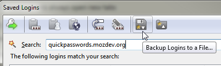
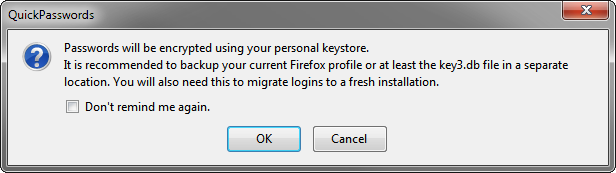
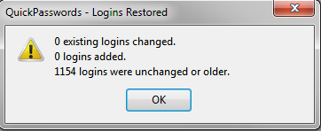
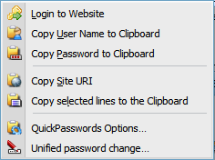
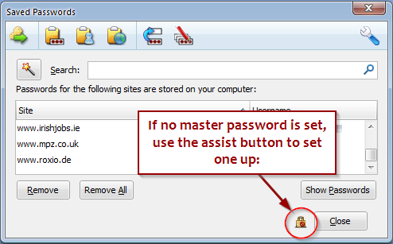
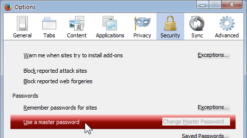
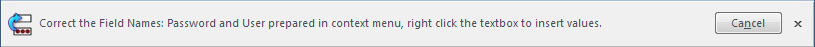
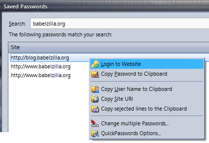
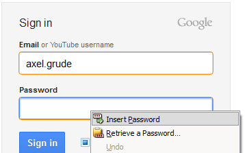

Version 3.11 - 19/02/2019
- Made compatible with Pale Moon and released on https://addons.palemoon.org to make available to alternative XUL platforms
Version 3.10 - 07/05/2018
- [Bug 26491]
ESR 2018 readiness - Make QuickPasswords compatible with Thunderbird 60.
Sorry but this is likely not going to happen. Too much work for QuickPasswords and I rather concentrate on my Thunderbird Extensions instead. - Updated Arabic and Serbian locales.
- To use in Waterfox, open about:config and set extensions.legacy.enabled = true
Version 3.9 - 26/11/2017

Some more information what changed in Firefox Quantum and how to get your Addons back
- Fixed: [Bug 26443] Thunderbird 57
hangs on start with QuickPasswords enabled.
Thunderbird 57 did not show its main window if any of my XUL based addons are loaded. A number of changes to the JavaScript engine necessitate various changes to code.
See also the Related Thunderbird bug - [Bug 26365]Firefox 53.0 Magic Wand misplaced. The button shows too far down in the dialog.
- AutoLocking the Masterpassword broken
- Spanish Argentinian Locale added: Thanks to Eduardo Leon at Babelzilla.org
- Polish Locale added: Thanks to Gabry$ at Babelzilla.org
- Removed support for Firefox 57+ - legacy addons do not work with Firefox. I am currently working with another developer to find a solution for Firefox Quantum. If it is at all possible we will release it under the code namee Quantum Passwords.
Version 3.8.3 - 17/02/2017
- [Bug 26343] Unified password change not working. when the Change password button is clicked, instead there is an error message, "tree is not defined". Note: you cannot use the login and repair buttons when the logins are shown within the about:preferences#security browser tab; therefore I disabled these buttons unless the dialog window is shown (by clicking on the QuickPasswords toolbar button or context menu from a website).
- Disabled Login and Repair buttons when the login list is shown from the Options tab which is shown at the URI about:preferences#security
Version 3.8.2 - 13/02/2017
- [Bug 26338] Login to website not working in Seamonkey 2.46
Version 3.8.1 - 29/01/2017
- Fixed oversized sliding notification alert
- Removed some of the code causing "unsafe CPOW usage" warnings
- [Bug 26329] Copying / Autofiltering stopped working in Fx 51 - This was caused by Firefox 51 stopping to expose the signonsTree in the saved logins window.
- [Bug 26330]
Fx51: Firefox e10s may cause failure of "Login to Website".
to make sure e10s stays disabled, set
browser.tabs.remote.autostart.2 = false
As a workaround I added flag for e10s compatibility; once Firefox completely forces multiprocess on its users this won't work anymore. I am currently trying to find a paid developer who can help rewriting the addon to make it multi-process compatible, while maintaining compatibility with the other host apps (Thunderbird / Seamonkey) that do not need multiprocess.
Disabling Multiprocess Windows (Firefox only)
To check whether Multiprocess is disabled in your version of Firefox, open the Help menu and click on
Troubleshooting. The help menu is opened with the question mark on the main firefox menu.
Alternatively, visit the url about:support
Under Application Basics you will find a section Multiprocess Windows:
This should be disabled. In Firefox 51, incompatible addons are able to disable Multiprocess, but this may
likely change in future versions. For these you may need to adjust the about:config setting
browser.tabs.remote.autostart.2 to false.
Version 3.7.2 - 20/03/2016
If you like the new backup / restore feature, please throw us some change. Also remember that you can request new features and report bugs here.
- 3.7.2 - Fixed [Bug 26162] Automatic Field correction does not work anymore
- [Bug 25937]
Added Backup / restore feature
This was quite a complicated implementation (probably 2 weeks of coding), but hopefully it was worth it. I started to write this after I managed to delete all my sync'ed passwords one night when I visited a friend and tried to log in from his machine. Somehow this propagated quickly to my home machine from the Sync store so I had to restore an older profile. Since Sync doesn't explain where it takes "the latest password state" from and there is no "yesterday's good logins" I decided it was time to support a local backup.
However there are some stipulations. First of all I never want QuickPasswords to be the one simple way to steal your friend's passwords, so the backup / restore features are protected with the master password. If you haven't set one, that's too bad, no backup for you. Secondly, we cannot have files full of unencrypted passwords on some local storage. It's just not safe at all. So by default, I am using Firefox built in keystore which is a unique personalized encryption platform generated when you create a new Firefox profile or install Firefox for the first time.
This also means that you won't be able to restore the passwords on another Firefox / Profile unless you have a copy of the same keystore. Same is stored in a file called key3.db and should be backed up somewhere to read the passwords again. If you loose or break this file you will also simply not be able to read your passwords on your Firefox anymore. As long as you use the same Firefox on the same Computer this won't present a problem unless there is a file corruption. To transfer to a different machine simply copy the relevant profile folder or at least key3.db.
All of these stipulations aside, there as a couple of things that the new backup restore does well (and may be better than others). First of all, when you restore your passwords, there is one thing it does NOT do: it will not DELETE all your passwords. Instead it will merge in the passwords, carefully checking the backed up logins and the time stamps (when was it last changed). If you want to start from zero, you have to delete all passwords manually. (Make sure to back up beforehand!)

Modified passwords: Restore will only change a password if it wasn't changed in the meantime. This way you won't accidentally overwrite a password you may have changed online into an older version. However, if this is what you actually want to do with a particular login, [maybe because a password change online didn't propagate into the web] you can simply delete that one manually before doing the restore.
File handling: you can store your files wherever you like, but I would still recommend not putting them on a public folder or shared drive, unless you have set up correct access permissions. Better safe than sorry!
 - Added Ukrainian locale by Volodymyr Savchuk
- Added Spanish locale by Alejandro Pérez Martín
- Fixed [Bug 26132] Firefox 43: Master Password Setup not shown - Firefox Options were moved into browser tab
- Fixed [Bug 26119] Exception thrown by Unified Pwd Change when nothing is selected
- Fixed [Bug 26133] Support links always open new tabs
Version 3.6 - 09/12/2015
- [Bug 25998]
Unified Password change (SSO passwords) was fundamentally improved.
List of matching domains is shown and the user can now choose to match user
and domain\user when changing the password for all relevant logins.

- [Bug 26114]
Fixed: When selecting one or more logins in password manager window, some
useful commands in the context menu are disabled.
- Security Fix: QuickPasswords now asks for the master password when copying multiple records to clipboard and when attempting to change passwords.
- Added support for Firefox Pale Moon.
Mozilla is going to eventuallyt terminatee XUL based addons, so it is important that our functionality stays supported on this Firefox fork. Here is a Mozilla blog post explaining their plans. - Added support for brighttext themes. The toolbar icon was improved for themes with dark backgrounds.
- Removed QueryInterface on boxObject because of https://bugzil.la/979835
Version 3.5.1 - 26/05/2025 - Signed Release
This version was auto-generated by Mozilla because of their recent "Add-ons signature" initiative, which is put in place to make all Addons safer. In future versions, Firefox will only allow signed addons to be installed unless given explicite permission by the user to install "unsafe" addons.
QuickPasswords itself hasn't actually changed, but it may still detect the change in the version number to open this page. You can safely close this tab. Sorry for the inconvenience.
Version 3.5 - 07/01/2015
- Fixed [Bug 25935]"Unified password change..." broken with Firefox 34.0.5.
Changing passwords via the "Unified password change..." button displayed the error "ReferenceError: theSite is not defined." This was caused by some of the fixes for [Bug 25909]. - Improved SSO password change making it resilient against early exits caused by multiple users on the same domain
- Added Feature [Bug 25931]Added a switch for disabling version history tab.
In order to disable the automatic change log, which is displayed when the Add-on is updated: open the Configuration Database (In Firefox, via entry of about:config in the Address bar; in Thunderbird, open Tb Options / Advanced / General and click the "Config Editor..." button) - then change the new (boolean) setting
extensions.quickpasswords.update.showVersionPage to false.
Version 3.4 - 16/12/2014
-
[Bug 25909]
A change in Firefox beta 35.0 caused QuickPasswords not to work any longer.
Fixed http://bugzil.la/1001090 "temporal dead zone" fix breaks add-on in Firefox 35.0
Version 3.3 - 17/11/2014
- Adds Toolbar button on first run (Firefox / SeaMonkey).
- When opened from button / context menu of a web page, filtering will now show less results to make login simpler.
- The last used login is selected by default. This accelerates login for users with multiple profiles.
Version 3.2.1 - 26/04/2014
The new Firefox Australis will be released on 29/04/2014!
To coincide with the layout changes in the new Firefox skin Australis I have reviewed the icons yet again and also added some productivity items. Enjoy!
- Improved Australis support with better icons
- Fixed [Bug 25750] - OK, Cancel missing in Options Dialog on Mac
- [Bug 25749] - "Fill search box when opening password manager" does not work - invalid (added detailed debug log to getURIcontext())
- Copy records now shows throbber animation
- Added copying passwordField, usernameField, formSubmitURL and httpRealm to copy records command
- Disable donation page on prereleases
- Made options window "alwaysRaised" to avoid confusion
- Added "locked" status for showing the Master Password. If a master password is set and hasn't been entered (thus protecting the passwords)
this will be shown by adding a lock symbol to the toolbar icon.
Note: if another method (than opening the passwordmanager window / clicking the quickpasswords toolbar button) is used to enter the master password, the lock icon may not be updated in that case; at the moment please use the toolbarbutton or "Retrieve a Password..." context menu item to be sure if you want your master password status to always be reflected correctly in the toolbar. - Added Repair confirmation for SeaMonkey users (there is no notification panel in SeaMonkey)
- Updated tr and pt-BR locales
- Postbox: Removed repair button and fixed opening options from password manager window.
- Special thanks to Avinash Kundaliya for helping me with the icons!!
Version 3.2 - 13/04/2014
- Australis Support - added new monochrome Icon set and big Icon for new Australis side panel customization
New Toolbar Panel:
Here is a side-by-side comparison of the two choices - new Australis skin to the left:
Australis Skin Colorful Skin Password Manager Password Manager Context Menu  Browser Context Menu Masterpassword lock states - Master Password locked (hover)
- Master Password lock prepared
- Master Password unlocked
- Hover State
- No Master Password set
- Master Password locked (hover)
- Master Password lock prepared
- Master Password unlocked
- Hover State
- No Master Password set
Note: For security reasons you cannot use the lock button to unlock the master password once it is locked. the only way to "unlock" is by clicking on the QuickPasswords button in the browser toolbar or the "Retrieve a Password..." context menu in the browser. You can however protect the passwords by "closing the lock" before you close the password manager - the browser will then behave as if you have started a new Session and prompt for the master password.
The new look can be toggled on QuickPasswords settings > Advanced+Support:
- Options Dialog - is now easier to read and split into General and Advanced+Support tabs.
- Toolbar Icon - downresized + rerendered colored Toolbar button to 20px for large icons (non Australis)
- Fixed: when no entry was selected and the Edit Passwords button was pressed it displayed the error "TypeError: QuickPasswords.Properties is undefined". Instead QuickPasswords now displays: "Please select at least one item from the list!"
Version 3.1 - 16/12/2013
- QuickPasswords now assists you when no master password is set:

This opens the Security preferences - click the red bar to set up the Master Password.

Note that this will encrypt all your stored passwords and make them unreadable, so make sure to remember it. I won't be able to help you retrieve them if you forget your master password. I would go for something that is easy to remember and not too hard to type. Including mixed case letters, numbers and special characters help to make it stronger. I usually have a master password in Firefox but usually not in Thunderbird - YMMV. - Improved filtering function (showPasswords) in order to always highlight the most correct domain match.
- Improved security of about:config dialogs - making sure no other configuration settings can be overwritten.
- Fixed disabling (login / repair) buttons in IETabs - IE tabs do not support modifying the context menu.
- Added translations for toggle version and donation messages.
- Moved options css file into skins folder.
- Removed obsolete buttons from passwordwindow overlay.
- Decreasing amount of console messages making most messages dependant on debug.default (defaults to true).
- Removed some global variables to avoid namespace pollution
Version 3.0 - 29/09/2013
- Streamlined password window by using a toolbar:
- Fixed [Bug 25580] Better heuristics to determine which fields are not visible to avoid filling the wrong logon fields. Some web sites use the same name for multiple login boxes and hide them by pushing them "off screen". This version tries to guard against that.
Added button to "Correct Field Names" - for sites that use duplicate / hidden login forms on the same page which confuses Firefox:
Use this feature if Quickpasswords is not able to auto-fill the login form. The following notification is displayed on the current browser tab:

Now right-click the password box and select Insert Password". Likewise, right-click the user name box and select "Insert User Name".QuickPasswords will prompt in both cases, whether to correct the stored entry using a notification at the top:
Click the [Update field] button to correct the field name entry in both cases.
Version 2.9 - 05/05/2013
- Improved automatic password filling to also work with form elements that are identified by name and not by id. This will increase reliability when trying to log on and also help correcting the field name in case the web page was modified.
- Bumped up compatibility
- nsIPrivateBrowsingService was removed in version 20 for per-window private browsing mode
Version 2.8 - 18/02/2013
- Fixed [Bug 25336] - From Firefox 18.0.2 upwards - When changing a larger amount of passwords can error can be thrown by Mozilla core code:
"Javascript Error: signon is undefined" or "undefined property table[selections[0].number]"
- Added throbber animation during multiple password change

Version 2.7 - 03/Feb/2013
- New "do not show this message again" checkbox to make it easier new users (no need to open options dialog any more)
- Default to closing password manager automatically to remove clutter
- Moved wizard button to top to clean up commands area.
- New: [FR 25319] Lock icon - protects password manager
through the master password prompt for added security.

Once you close the lock and leave the Window, it will react the same way as it does when you open the browser: it will prompt for the password again. So now you can leave the browser open and protect it temporarily when you have to leave your desk. - Added Option to update changed form ids - when QuickPasswords can not fill the login form automatically based on stored credentials,
and the context menu is used, it can offer to correct the stored login information.

Sometimes sites change their login forms and the normal way to deal with this (delete password and re-add it) is cumbersome and not very obvious. With the new correction feature QuickPasswords will "learn" where the new login and password boxes are. All you have to do is click the [Update Field] button above the web page.
version 2.6 - 17/01/2013
- Fixed [Bug 25307] - On the Statusbar of Thunderbird and SeaMonkey mail windows some or all icons are missing:
- Thunderbird / SeaMonkey mail - Added QuickPasswords command to folder pane context menu
- Improved filter prediction in SeaMonkey mail windows - we can now filter passwords for
- the mailbox when right-clicking a folder
- the sender domain when right-clicking a message
Version 2.5 - 10/01/2013
- New: [FR 25287] reacts to double-click on a login item on Password Manager
- New: [FR 25287] QuickPasswords now inserts the login information automatically
when you click the login button (or double-click an entry)
How: QuickPasswords will go through all forms in the page and match the names of password & user name fields and also make sure these are currently visible. (Many pages have multiple forms, some of them hidden) Only then it will insert matching information username / password or both. If something cannot be matched, then the context menu entry of the missing field(s) is added as a fallback, like in the previous version. - Removed duplicate "copy UserName" menu item.
- Known Issues: The context menu is always visible when in a Thunderbird content tab
Version 2.3 - 13/12/2012
- Fixed legacy layout issues in Postbox
- Fixed a problem with version number which caused multiple donation screens
- IEtab2 support
- Make it possible to disable donation screen displayed on update by changing extensions.quickpasswords.donations.askOnUpdate = false
Version 2.2.1 - 25/10/2012
- Fixed a problem with showing advanced debug settings (window was going to background)
- Replaced deprecated -moz-linear-gradient CSS values
- Replaced -moz-transition CSS values with newer ones
- known issues: es-AR and pt locales are incomplete.
- 2.2.1 : fixed install script for Italian locale; accidentally it was not included in 2.2
New locales added
- Completed fr locale - thanks to Jean Michel Bourdé
- Added Italian Locale - thanks to Leopoldo Saggin
Version 2.1 - 08/06/2012
- Fixed [Bug 24940] - Doesn't fill username/password in firefox 13
- Completed Hu locale
- fixed display of version link and donation pages after updates
Version 2.0 - 30/05/2012
- Compatibility update => Gecko 15
- added some translation to the hebrewlocale
Version 1.9.1 - 31/01/2012
- Removed some unnecessary errors from console to improve S/N ratio
- Fixed [Bug 22904] Icon Size on toolbar buttons was too big
- Some layout improvements in change password box
Version 1.8 - 20/01/2012
- Fixed of German translation (UTF format) in order to display change password dialog correctly
Version 1.7 - 26/12/2011
- Added cancel login menu item - this tidies up the username and password menu items in case they won't be used
- Added automatic scrolling to selected row in Manager
Version 1.6 - 12/12/2011
- Added "change (multiple) passwords" feature

You can now change the password to one web site or many web sites (provided they have matching passwords). Simply use the magic wand in the password manager first to make your selection (e.g. google.com). Then press the [change multiple passwords] button. finally click on [Select all entries that match]. This will highlight all items that satisfy "google.com" and have this password. Enter a new one and you can change passwords for all these entries in one operation!
The good thing is that it will only affect entries with same password so you won't mess up anything if you have multiple users (with differing passwords) stored
- Added "Login (without Clipboard)" feature

"Login" is now the new top command, as it is probably the most frequent use case.

Once "Login to Website" has been selected, you can insert both User Id and Password with a simple right-click. The clipboard is not used during this operation. Extra safe!
 - stability fixes mainly for SeaMonkey and Postbox
- support for private browsing mode (Firefox and SeaMonkey)
- rapid release bump (maxVer = 9.*)
- removed locale from jar file
Version 1.5 - 22/09/2011
- Added Fx + Tb 6.0* compatibility
- Added refine sites button (magic wand) to narrow down sites with multiple entry points
- Fixed non working links in options dialog; Fixed tab focusing for following them.
- Added new versioning regime and link to site on update / first install - triggered by first use / not by just starting up host Application.
- Added specialized functionality for mail clients
- retrieve mail account password (when in a non-local folder)
- retrieve URL account passwords (when in content tab, like in Firefox)
- retrieve passwords based on current sender (when viewing a single message)
- hidden debug configuration (right click debug box)
New locales added
- tr-TR thanks to Nikneyim [BabelZilla.org]
- sr thanks to Rancher [BabelZilla.org]
Version 1.4 - 09/02/2011
- Force icons in context menu even in default theme (class menuitem-iconic)
- Added tooltip (and updated label text) to the time delay option
- Now there are 3 options for displaying browser context menu: never, on text items and always
- Open issue: in Firefox 4, still not able to display the extension's version number
Version 1.3 - 22/01/2011
- Changed behavior of context menu item so it only shows if cursor is on an editable (text) field
- Added Option to completely disable the context menu item from from Browser Window
- Context Menu item in browser window is now only visible on editable elements
- Added Option to submit bug or ask for feature
- Fixed a bug "menu is null" when opening password manager window
- Added Options Menu Item to context menu in Password Manager
- Added option to hide Context Menu
- Added Postbox support
New locales added
- es-AR by Eduardo Leon
- ja-JP by Noumi Ryoko
- sv-SE by Mikael Hiort af Ornäs
Version 1.2 - 04/01/2011
- Made Extension compatible with Firefox 4.0
Version 1.1 - 29/12/2010
- Made context menu compatible with the "Saved Password Editor" Extension
- Fixed a bug that made Header row appear as "undefined" when copying multiple records and "Display message after copying" was disabled
Version 1.0 - 09/07/2010
- Danish Locale Added (Joergen Rasmussen)
- Hebrew Locale Added (baaryoni)
- Turkish Locale Added (Nikneyim)
Version 0.9.8 - 22/05/2010
- Added option to Copy User Name (in password manager's context menu)
- Added option to Site URL (in password manager's context menu)
Version 0.9.6.1 - 27/02/2010
- Added Russian Locale (Anton Pinsky)
- Markh: Reviewed Dutch locale
- Added link to Mozdev homepage to options dialog
- removed unnecessary JSON module
Version 0.9.6 - 20/02/2010
- Added "copy multiple lines / records" feature
- Added option to include header (for pasting data in spreadsheets) when doing this
- Added Log information about copied data to javascript console (passwords are not displayed)
- Added Dutch Locale (markh van BabelZilla.org)
- Added Cantonese Locale (Loviny)
- Localized description
Version 0.9.5 - 14/02/2010
- Added feature context menu in password manager
- Added copy line feature
- Added German Locale (AG)
- Added French Locale (Bilouba http://lionel.bijaoui.free.fr/)
- Added about button to options dialog
Version 0.9.4 - 12/02/2010
- Fixed Icon and Writing on Browser Content Popup Menu
- Added links to new extension homepage: http://quickpasswords.mozdev.org
- Removed any references to the old working title "PasswordClipper"
Version 0.9.2 - 10/02/2010
- Fixed localization issues
- Fixed an issue with case sensitivity in Linux
- Added missing icon for small toolbar view
- Added 'real' settings to options dialog
Version 0.9 - 09/02/2010
- Released on AMO